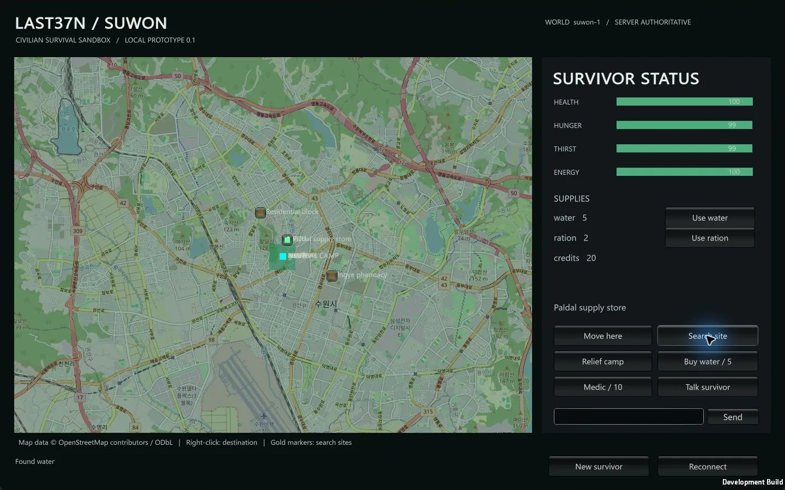

Tracefolio REPORTS & ISSUES
Tracefolio REPORTS & ISSUESUnity 6000.0.83f1 기반 수원 생존게임 첫 로컬 프로토타입
완료Unity Windows 빌드와 서버 접속·이동·수색을 실제 실행했습니다. 서버 테스트 7개가 통과했으며 DB 연결과 브라우저 지원은 후속 단계입니다.
작업 결과
Unity C# 클라이언트와 Node.js TypeScript 서버로 첫 로컬 프로토타입을 만들고 실행했습니다. React는 사용하지 않습니다. 다른 프로젝트 4개의 ProjectVersion.txt와 설치된 에디터에서 Unity 6000.0.83f1 일치를 확인했습니다. 전체 게임 완성이 아니라 첫 로컬 프로토타입 단계의 완료입니다.

변경 내용
적용 내용
클라이언트는 입력·지도·UI 표시, 서버는 이동 시간·생존 상태·인벤토리·수색·NPC 거래·주변 채팅·세이프존 판정을 맡도록 분리했습니다. 월드별 캐릭터와 접속 토큰, 요청별 처리 결과를 저장합니다. 이동은 서버가 계산한 위치를 받아 표시합니다. 동일 수색 요청을 재전송해도 아이템이 중복 지급되지 않습니다.
실제 OSM 타일에 게임 전용 장소와 중립 캠프를 표시하고 출처·ODbL 표기를 넣었습니다. 보이는 타일만 요청하며 7일 로컬 캐시를 사용합니다. 경비병·상인·의무병·생존자 유형과 기본 상호작용을 구현했습니다. README와 아키텍처 문서에 실행법·규칙·단계별 완료 기준을 기록했습니다. DB용 PostGIS 스키마와 Compose도 작성했습니다.
규칙은 설정 객체로 분리했으며 이동속도·상호작용 거리·쿨다운·경제 수치는 임시 프로토타입 값입니다. 공식 로고를 확인하지 못해 logo는 null이며 미등록 상태입니다.
검증
Node.js v24.22.1에서 node --test server/test/*.test.ts 실행: 7개 통과. 생성 지점·월드 분리·서버 이동 판정·수색 거리와 쿨다운·중복 지급 방지·NPC 거래/치료·중립 구역 제한·소지품 음수 방지·비접속 생존 규칙을 확인했습니다. 실제 WebSocket 클라이언트 2개로 통신하고 서버를 재시작한 뒤 동일 캐릭터와 아이템 수량 복원을 확인했습니다.
Unity 6000.0.83f1 배치 빌드: LAST37N_BUILD_SUCCEEDED, 종료 코드 0. 생성한 Windows 실행 파일이 실제 서버에 접속해 목적지 이동·수색·물 1개 증가를 자동 확인했습니다. 실제 게임 창에서도 Search site 버튼을 눌러 물이 4개에서 5개로 증가하고 Found water가 표시되는 것을 직접 확인했습니다.
배치/숨김 실행에서 저장한 검은 캡처는 증거로 채택하지 않았습니다. Computer Use로 실제 게임 창을 캡처했습니다. 원본 PNG 229,100바이트(1442×932)에서 창 테두리를 제거한 WebP 155,188바이트(1440×900)로 압축했고 실제 지명·물 수량·상태 문구 판독을 확인했습니다. 스크린샷은 AI 생성 이미지가 아닙니다. 초기 sandbox의 EACCES는 로컬 통신 허용 실행으로 재검증했습니다. 공개 보고서에는 인증 토큰이나 개인 로그를 포함하지 않았습니다.
남은 사항
현재 영속화는 단일 프로세스용 원자적 JSON 스냅샷입니다. PostgreSQL·PostGIS 실제 연결·트랜잭션 검증은 미구현이며 Docker도 설치 확인되지 않았습니다. Unity Web 모듈이 없어 브라우저 빌드는 미실행입니다. 현재 ClientWebSocket 경로는 Windows용이며 브라우저용 JS 연결 계층을 추가해야 합니다.
다음 순서는 PostGIS 저장소 연결 → 수원 경계·도로·접근불가/위험지역 데이터 검증 → Web 빌드와 브라우저 통신 → 100명 부하 검증입니다. 현재 직선 이동과 사각형 지역 제한은 도로 보행 가능 판정이 아닙니다. 스폰/세이프존은 게임용 후보이며 실제 안전성은 미확인입니다. 캠프 NPC 라벨은 밀집해 겹치므로 표시 개선이 남아 있습니다. 100명 동시 접속, 실제 수원 행정 경계, PvP·차량·세력·개인 간 거래는 검증 또는 구현하지 않았습니다. 요청 영수증은 캐릭터당 1024개 제한이며 운영용 정리 정책이 필요합니다. UI는 초기 영문이며 한국어 적용은 후속 개선입니다. 공유 대화 링크 원문은 가져오지 못해 이 채팅의 명세를 기준으로 개발했습니다.
작업 시간
- 제안 시간: 환경 확인 1
3분, 첫 로컬 프로토타입 구현·필수 검증 3060분 예상으로 안내했습니다. - 실제로 완료된 시간: 시작 2026-10-30 16:44:32 KST(Asia/Seoul). 개발·실행·시각 검증 완료 2026-10-30 17:00:23 KST, 15분 51초. 보고서 생성 기준 2026-10-30 17:01:14 KST까지 16분 43초. 중앙 등록·배포 시간은 이 생성 시점 이후 별도 확인합니다.
- XERJ: 미사용 — XERJ 도구가 제공되지 않았습니다. 빈 프로젝트에서 시작했으며 실제 파일·설정·실행 결과와 대체 직접 검색으로 확인했습니다.